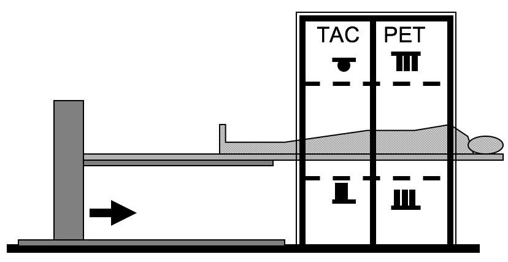
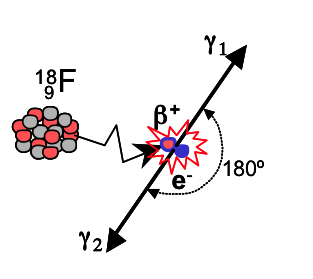
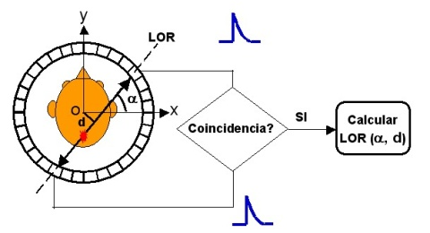
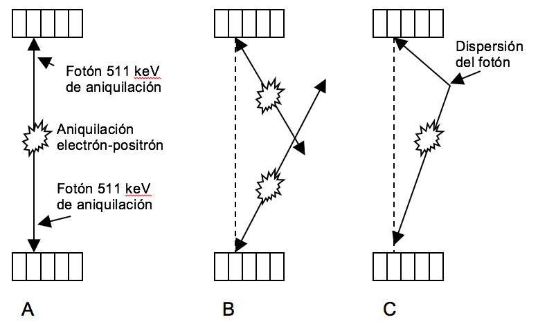
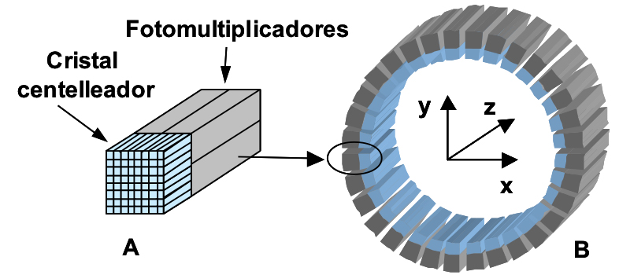
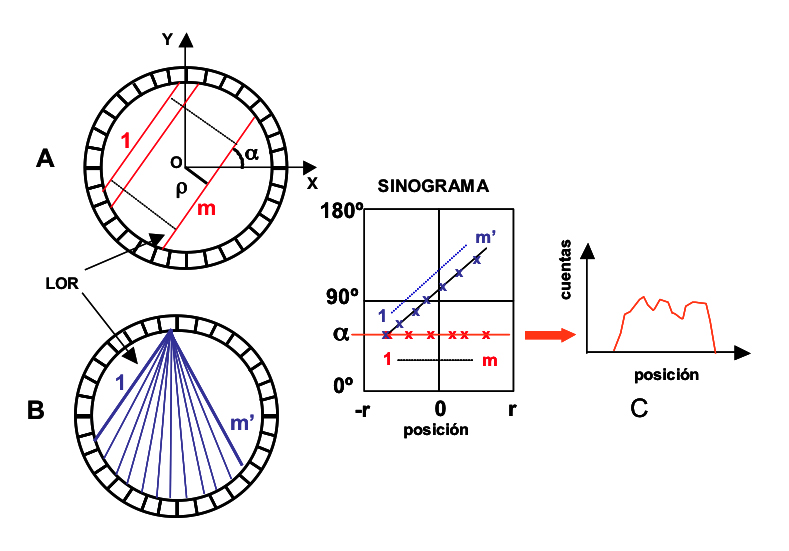
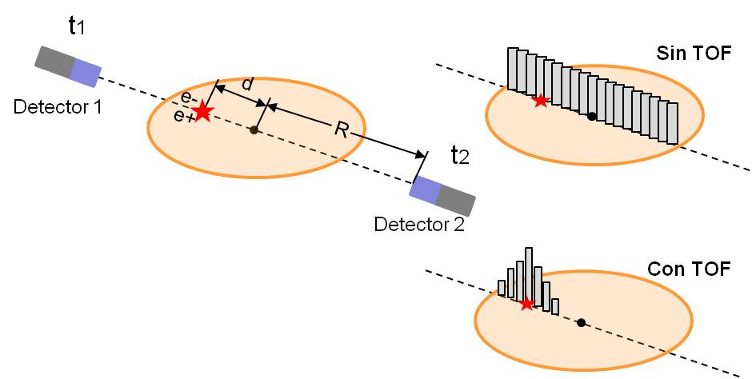
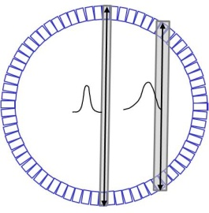

Figura 6.- Utilización de los anillos septales en modo 2D (A). Su eliminación en modo 3D aumenta el número de LOR.
Josep M Martí-Climent, Jesús Félix Fontestad
El primer tomógrafo PET-TC, diseñado por D. Townsend, fue introducido para el uso clínico en 1998[1]. La motivación que impulsó el diseño de este equipo fue la obtención de imágenes clínicas tanto de Tomografía por emisión de positrones (PET) como de Tomografía Computarizada (TC), alineadas con precisión, en un mismo tomógrafo. Secundariamente la disponibilidad de la imagen TC para determinar las correcciones en la adquisición del PET, tanto de atenuación como de la radiación dispersa fue secundaria[2]. Además, se consiguió una reducción del tiempo dedicado al estudio de transmisión, desde los 20-30 minutos con una fuente de 68Ge a menos de un minuto en un equipo TC. Las dos modalidades son complementarias, ya que la imagen PET tiene la carencia del detalle anatómico, y la TC adolece de la especificidad funcional de la PET.
La solución de las casas comerciales al diseño de un equipo PET-TC ha sido la disposición de un tomógrafo TC en tándem con un tomógrafo PET (Fig. 1). En el diseño de estos tomógrafos PET-TC
|  |
|
Figura 1: Esquema de un tomógrafo PET-TC, con sus componentes en tándem |
ha sido preciso tomar decisiones sobre[3]: la elección de características de funcionamiento de sus componente PET y TC, el nivel de integración mecánico de los mismos, el diseño de la camilla, y el nivel de integración de los programas de tratamiento de las imágenes, así como las herramientas de visualización y análisis. Al tener la PET como factores limitantes la resolución espacial y el número (estadística) de sucesos detectados para formar la imagen, junto con la duración del estudio, es deseable que el tomógrafo PET disponga de las mejores prestaciones (características) de funcionamiento.
Para la obtención de imágenes en la PET se utiliza como radiotrazador un emisor de positrones El positrón es una partícula que tiene la misma masa que el electrón, siendo el valor de su carga eléctrica igual a la del electrón pero de signo opuesto, motivo por el que también se la conoce como la antipartícula del electrón y se representa por el símbolo β+.
|  |
|
Figura 2.- Emisión y aniquilación del positrón |
Un positrón emitido por el núcleo, recorre una distancia promedio del orden de 1-2 mm, durante la que pierde su energía cinética mediante colisiones con los átomos de su entorno hasta que finalmente se recombina con un electrón, produciéndose una reacción de aniquilación (transformación de la masa del positrón y del electrón en energía), dando lugar a la aparición de dos fotones simultáneos con energías de 511 keV cada uno, que se emiten en direcciones opuestas, formando un ángulo de 180º (Fig. 2).
En la Tabla 1, se presentan las características de los radionucleidos utilizados en la PET, siendo el flúor-18 (18F) el radionucleido más utilizado actualmente junto al radiofármaco 18FDG (2-[18F]-fluoro-2-desoxi-D-glucosa). Además, su periodo de semidesintegración de 110 minutos, permite su distribución desde el lugar de producción.
Tabla 1.- Propiedades físicas de los positrones producidos por radionúclidos emisores de positrones.
|
Radio- núclido |
T1/2 minutos |
Probabilidad (%) |
Emáxima (MeV) |
Rango en agua (mm) |
|
|
Máximo |
Medio |
||||
|
C-11 |
20,4 |
99,9 |
0,96 |
3,9 |
0,4 |
|
N-13 |
10 |
99,8 |
1,2 |
5,1 |
0,6 |
|
O-15 |
2 |
99,9 |
1,7 |
8,0 |
0,9 |
|
F-18 |
110 |
100 |
0,64 |
2,3 |
0,2 |
|
Cu-62 |
9,7 |
97,6 |
2,9 |
15 |
1,6 |
|
Ga-68 |
68 |
87,9 |
1,9 |
9,0 |
1,2 |
|
Rb-82 |
1,25 |
94,9 |
3,4 |
18 |
2,6 |
Disponiendo de un anillo circular de detectores (Fig. 3), pueden detectarse los dos fotones producidos que se considera que pertenecen a una única aniquilación, si se cumple:
1.- Que cada uno de los fotones detectados tenga una energía de 511 keV.
2.- Que el intervalo de tiempo existente entre las dos detecciones sea inferior al tiempo definido en la ventana de coincidencia (del orden de varios nanosegundos).
|  |
|
Fig. 3.- Detección por coincidencia |
Este proceso de detección, que no hace uso del clásico colimador utilizado por las gammacámaras SPECT, se le denomina de colimación electrónica.
A partir de la posición de los detectores que han intervenido en la detección se calcula la línea de respuesta (LOR) o línea de coincidencia, que es la línea recta que contiene el punto en donde se ha producido la aniquilación positrón-electrón y que resulta definida por su distancia d al origen del sistema de referencia y por el ángulo a que forma con el eje horizontal.
Cada detección de un fotón de aniquilación se denomina suceso “sencillo”. Así, la tasa de sucesos “sencillos” es superior a la de “verdaderos”, ya que se produce un suceso “verdadero” cuando dos detectores registran en coincidencia sendos sucesos “sencillos” en un intervalo de tiempo llamado “tiempo de coincidencia τ, típicamente de 4 a 10 ns. Además de las coincidencias verdaderas, se producen sucesos coincidentes que degradan tanto la calidad de la imagen como su valor cuantitativo, éstas son las coincidencias aleatorias y de dispersión (Fig. 4).
|  |
|
Figura 4.- Sucesos asociados a la detección en coincidencia. (A) Coincidencia “verdadera”, (B) Coincidencia accidental, (C) Coincidencia de dispersión. En las situaciones B y C, la línea de coincidencia asociada a la aniquilación es incorrecta |
Las coincidencias aleatorias o accidentales suceden cuando dos fotones de 511 keV de distintos sucesos de aniquilación son detectados por sendos detectores dentro de la ventana de coincidencia t (Fig. 4.B). La tasa de sucesos aleatorios (Caleatorias = 2 τ S1 S2) es proporcional al producto de las tasas de sucesos sencillos de cada detector (S1 y S2), y aumenta linealmente en función de la ventana de coincidencia. Como la tasa de sucesos verdaderos es proporcional a la actividad, la relación de tasas aleatorias/verdaderas también aumenta linealmente con la actividad.
La utilización de los anillos septales (en modo de adquisición de 2D) reduce la actividad vista por los detectores en coincidencia a la contendida en la sección de los detectores; en consecuencia, el cociente de sucesos aleatorios/verdaderos disminuye de un modo importante. Por otro lado, los detectores más rápidos permiten reducir la ventana de coincidencia y mejorar la relación aleatorios/verdaderos. Así, la ventana típica empleada en los tomógrafos basados en cristales BGO es de 10 ns, reduciéndose a 4 ns con los cristales LSO.
Los fotones de aniquilación pueden interaccionar con el tejido antes de alcanzar los detectores, por medio de la dispersión Compton, manteniendo su energía dentro de la ventana energética alrededor de los 511 keV establecida para admitir las detecciones; en consecuencia, el suceso de aniquilación se asigna incorrectamente a la línea de coincidencia que une los dos detectores que registran los fotones (Fig. 4.C). La tasa de sucesos dispersos es también proporcional a la actividad presente; por ello, el cociente de las tasas de sucesos dispersos/verdaderos es independiente de la actividad, así como del tiempo de la ventana de coincidencia.
La presencia de anillos septales reduce la tasa de sucesos dispersos. Además, los fotones dispersos pueden ser identificados y rechazados aplicando un umbral o ventana de energía para aceptar los fotones detectados. En los tomógrafos basados en los cristales de BGO la ventana de energía es desde los 300-350 keV hasta los 650 keV, aceptando mayor radiación dispersa que los cristales de NaI y GSO que operan con una ventana de energía desde los 435 keV hasta los 590-655 keV[4]. Otra posibilidad es compensar matemáticamente los fotones dispersos[5].
Un resumen de las características de los centelleadores utilizados en los tomógrafos PET se presenta en la tabla 2. El BGO tiene el coeficiente de atenuación mayor para los fotones de 511 keV debido a su elevada densidad y número atómico. Como desventajas presenta una pobre producción de luz (20 % respecto al NaI) y unas características temporales que reducen tanto su resolución en energía como su resolución temporal.
El cristal de NaI(Tl) es el que presenta mayor luminosidad y es utilizado en las gammacámaras de Medicina Nuclear, operando algunas en coincidencia para PET. Sin embargo, para los fotones de 511 keV, la sensibilidad es muy baja. Como ventajas presenta la facilidad de poder manufacturar cristales de gran superficie, y su bajo coste.
El oxiortosilicato de lutecio (Lu5SiO5:Ce) o LSO tiene la segunda eficiencia más elevada. Su elevado rendimiento de fotones, el corto tiempo de desvanecimiento y sus buenas propiedades mecánicas le hacen adecuado para los tomógrafos PET[6].
Otro centelleador es el GSO que, al igual que el LSO, presenta mejores características temporales que el BGO reduciendo el tiempo muerto y mejorando las prestaciones a elevadas tasas de sucesos detectados. Además, su mejor resolución en energía (9 %) le permite rechazar con más eficiencia los fotones dispersos.
Tabla 2: Propiedades físicas de los centelleadores PET.
|
Material |
r (g/cm3) |
Zeff |
m (/cm) |
P (%) |
T (nsec) |
N (foton/ MeV) |
FWHM (%) |
H |
|
BGO |
7,1 |
75 |
0,95 |
40 |
300 |
9000 |
12 |
N |
|
GSO |
6,7 |
59 |
0,70 |
25 |
60 |
8000 |
9 |
N |
|
LSO |
7,4 |
66 |
0,88 |
32 |
40 |
30000 |
10 |
N |
|
NaI(Tl) |
3,7 |
51 |
0,34 |
17 |
230 |
41000 |
8 |
S |
ρ: Densidad, Zeff: Número atómico efectivo, μ: Coeficiente de atenuación lineal, P: Probabilidad relativa de efecto fotoeléctrico, T: Tiempo de desvanecimiento del centelleo, N: Número de fotones producidos, FWHM: Resolución en energía, H: Higroscópico.
La unidad básica en los tomógrafos PET es el bloque de cristales detectores (Fig. 5.A), desarrollado a mediados de los años 80[7]. El bloque centelleador está cortado en una matriz de cristales (de unos 5x5 mm2 de sección y de 2 a 3 cm de profundidad) que están acoplados a varios tubos fotomultiplicadores (TPM). La luz compartida entre los TMP se utiliza para localizar el detector en el que ha interaccionado el fotón incidente; siendo el principio de funcionamiento similar a la lógica de una gammacámara.
La disposición de bloques detectores en un mismo plano configura los anillos detectores (Fig. 5.B). Por otro lado, al aumentar el número de bloques contiguos permite aumentar el número de anillos y el campo axial de visión (según el eje z) hasta los 15 ó 25 cm.
|  |
|
Figura 5.- Bloque detector (A). Conjunto de anillos (B). |
Los tomógrafos PET han utilizado clásicamente unos anillos septales colocados entre los cristales detectores desde estos hacia el centro del tomógrafo (12 cm de longitud y 1 mm de espesor). Estos anillos (Fig. 6.A), limitan las LOR a las incluidas en el plano de cada anillo de cristales detectores, eliminando los fotones procedentes de otros planos y reduciendo, en consecuencia, las coincidencias aleatorias y de dispersión en las que un fotón procede de otro plano. A este modo de adquisición con coincidencias en 2 dimensiones se le denomina modo 2D.
La eliminación de los anillos septales permite la coincidencia entre todos los cristales del tomógrafo, adquiriéndose en modo 3D (Fig. 6.B), siendo el modo normal de operar de la mayoría de tomógrafos PET. En este modo la sensibilidad aumenta aproximadamente en un factor 5, respecto al modo 2D. Sin embargo, también aumentan las coincidencias aleatorias y de dispersión. Así, en los tomógrafos clínicos, la fracción de fotones dispersos en modo 2D es del 15-20 %, aumentando al 30-40 % en modo el 3D.
En una adquisición en 2D se realiza un muestreo angular uniforme alrededor del sujeto. Para cada plano de adquisición, se tienen los datos de emisión como proyecciones unidimensionales de la actividad en el sujeto, que se corresponde a las diferentes LOR (Fig. 7). Los datos de la proyección se almacenan en una matriz denominada sinograma, donde las filas y las columnas representan las coordenadas de muestreo angular α y radial ρ, por lo tanto en cada una de las celdas se contabilizan el total de eventos de las LOR con un ángulo α y distancia radial ρ determinada. Según esta representación todas las LOR, con el mismo ángulo (Fig. 7-A), estarán situadas en una fila de la matriz, y todas las LOR posibles de un detector con el resto (Fig. 7-B) quedarán situadas sobre una diagonal cuya pendiente depende de la posición del detector común.
|
|
Figura 6.- Utilización de los anillos septales en modo 2D (A). Su eliminación en modo 3D aumenta el número de LOR. |
Finalizada la adquisición, en cada fila del sinograma se dispone de todos los sucesos acumulados en las LOR de una proyección transversal tomográfica, (Fig. 7-C).
|  |
|
Figura 7.- Obtención del sinograma |
La resolución espacial del tomógrafo, expresada como la anchura a mitad de altura de la función de dispersión de línea (FWHM), es el resultado de la combinación o contribución de varios factores físicos o intrínsecos, relacionados con la aniquilación del positrón, y de otros factores instrumentales5:
Por otro lado, la resolución se degrada hacia el borde del campo de visión: la absorción del fotón (efecto fotoeléctrico) se puede producir en el cristal adyacente al cristal que primero intercepta la trayectoria del fotón (verdadera línea de coincidencia).
La sensibilidad del equipo detector está determinada por la combinación de la eficiencia geométrica y la eficiencia intrínseca. Ésta depende del material utilizado como detector, en cuanto a densidad, número atómico y espesor del cristal. Como la detección se realiza en coincidencia, la eficiencia intrínseca es función del cuadrado de la eficiencia individual del cristal. Por ello, una mejora en la sensibilidad del cristal supone una mejora cuadrática en la sensibilidad del equipo.
La fracción de dispersión representa la proporción de las coincidencias de dispersión respecto a las totales. Una ventana de adquisición energética estrecha, alcanzable con cristales con mejor resolución energética como el GSO, permitirá rechazar mejor las coincidencias de dispersión y reducir la fracción de dispersión.
Durante el proceso de reconstrucción tomográfico o previo a éste, deben aplicarse una serie de correcciones con el fin de optimizar la imagen final y poder realizar medidas cuantitativas de la concentración del radiotrazador en el interior del organismo estudiado.
El tiempo muerto es el tiempo precisado por el sistema de detección para procesar y registrar un suceso, durante ese tiempo no se pueden procesar ni registrar otros sucesos. En consecuencia, en el equipo PET la tasa de sucesos medidos será menor que la real. Sin embargo, estas pérdidas de sucesos sólo son significativas para tasas “elevadas” (mayores que el inverso del tiempo muerto expresado en segundos). Los tomógrafos incorporan métodos para corregir el efecto del tiempo muerto.
Los detectores utilizados en un tomógrafo PET, que en algunos equipos son más de 10000, pueden presentar variaciones en cuanto a espesor, propiedades de emisión de luz y funcionamiento de la electrónica asociada, entre otras. Estas diferencias llevan a pequeñas variaciones entre las tasas de eventos registrados en las líneas de coincidencia frente a una misma actividad. Por ello es preciso normalizar la respuesta de los detectores.
Los sucesos aleatorios contribuyen en la imagen asignando coincidencias en posiciones incorrectas; en consecuencia degradan la imagen y falsean la concentración de radiactividad. Normalmente se utiliza la técnica de la “ventana retrasada” para determinar y corregir las coincidencias aleatorias. En este método se emplea una ventana temporal de coincidencia retrasada unos 50 ns a la ventana de coincidencia, y de la misma duración que esta (4-10 ns). El ritmo de sucesos que se registre en la ventana retrasada proporciona una medida del número se sucesos aleatorios en la ventana de coincidencia, ya que las coincidencias aleatorias no tienen una correlación temporal al no estar producidas por fotones emitidos simultáneamente en un mismo suceso de aniquilación.
En una adquisición en modo 2D, cuando se ha realizado la corrección de coincidencias aleatorias, las “colas” que aparecen en las proyecciones son atribuibles a las coincidencias de dispersión y pueden ser ajustadas matemáticamente a una función que se sustrae (deconvoluciona) al perfil de actividad de la proyección medida, para obtener proyecciones libres de sucesos dispersos.
En una adquisición en modo 3D la aproximación de 2D no es normalmente adecuada, existiendo diversos métodos alternativos, comprendiendo[8]: Medida en una doble ventana de energía, métodos de convolución/deconvolución parecidos a los utilizados en 2D, estimación directa de la distribución de fotones dispersos en base a una simulación de Monte Carlo, y reconstrucción iterativa con compensación de la radiación dispersa (utilizando asimismo técnicas de Monte Carlo).
Las imágenes del PET están degradadas debido a la atenuación que sufren los fotones interactuando a lo largo de su camino hacia los detectores. Ésta es la mayor corrección en la PET; sin embargo, su corrección es relativamente fácil y precisa, ya que la probabilidad de detectar los dos fotones en coincidencia depende del espesor total del paciente en cada línea de coincidencia, con independencia de la posición de la fuente. En consecuencia, se puede utilizar una fuente emisora de positrones (68Ge) extendida a lo largo del campo de visión axial y hacerla girar en la parte exterior del campo de visión, para obtener la adquisición de “transmisión” (TX). Si se realiza una adquisición con dicha fuente pero sin paciente (“en vacío”), el factor de corrección de la atenuación (FCA) se puede calcular para cada línea de coincidencia a partir del cociente entre los registros de la adquisición en vacío y del sujeto.
En un tomógrafo PET-TC el mapa de atenuación puede obtenerse a partir de las imágenes generadas de la TC. La utilización de la imagen TC para obtener los FCA presenta cuatro ventajas[9]: Tiene mucho menos ruido estadístico, puede ser adquirida de forma mucho más rápida, es posible obtener un estudio sin contaminación de la transmisión realizada tras la inyección del radiofármaco, y no es necesario reemplazar periódicamente las fuentes de 68Ge.
Al utilizar un tubo de rayos X como fuente de transmisión, con una energía media de unos 80 keV, los coeficientes de atenuación obtenidos deben ser convertidos para que correspondan a la energía de los fotones de aniquilación de 511 keV. Con este propósito se han utilizado varios procedimientos: el método de factor de escala, la segmentación y un método híbrido de los dos anteriores[10]. Así, la imagen original del TC, obtenida a una energía media de unos 80 keV, es convertida pixel a pixel a una imagen de coeficiente de atenuación para fotones de 511 keV. A continuación la imagen es interpolada (suavizada) desde la resolución del TC a la resolución de la imagen del PET, y finalmente los FCA se generan retroproyectando la imagen interpolada[11].
La normalización, la corrección por coincidencias por dispersión y la corrección de atenuación se realizan normalmente en el espacio de los sinogramas, después de las correcciones de tiempo muerto y de sucesos aleatorios y antes de la reconstrucción tomográfica de la imagen.
El primer algoritmo de reconstrucción es la retroproyección filtrada (FBP, filtered back projection), que proporciona una estimación de la distribución 2D del radiotrazador cuando las proyecciones no tienen ruido4 . Los algoritmos iterativos se fundamentan en la optimización, al maximizar o minimizar una función objetivo determinada por el algoritmo empleado. El objetivo se alcanza después de varios procesos analíticos denominados iteraciones. Estos algoritmos permiten incorporar información a priori para una reconstrucción de la imagen más precisa; información como el nivel de ruido, la atenuación o la dispersión. Para acelerar este proceso de convergencia el algoritmo OSEM (ordered-subsed expectation maximization) agrupa las proyecciones en subgrupos, que incluyen proyecciones uniformemente distribuidas alrededor del volumen del sujeto[12], siendo éste algoritmo el más utilizado.
En una adquisición en modo 3D, la reconstrucción de la imagen precisa una adecuación ya que las proyecciones adquiridas sufren de un muestreo incompleto debido al campo finito axial del tomógrafo. Por otro lado, los algoritmos de 3D son complejos y requieren un gran espacio de memoria. Por ello es preferible reducir la información adquirida en 3D, o reordenarla (re-binning), en sinogramas de 2D, y a continuación proceder a una reconstrucción de los datos con un algoritmo de 2D. Para la reordenación de la información de los sinogramas oblicuos se han propuesto diversos métodos[13]; siendo el más utilizado el FORE (Fourier re-binning), basado en la transformación de Fourier 2D de los sinogramas oblicuos.
En la técnica de tiempo de vuelo (time of flight [TOF]) se mide la diferencia temporal que hay entre la detección de los dos fotones de aniquilación. Para ello se precisan cristales centelleadores con una resolución temporal muy buena, como el cristal LSO o el cristal LYSO.
La aniquilación producida a una distancia (d) del centro del tomógrafo de radio R (Fig. 8) supone, para los fotones viajando a la velocidad de la luz (c), una diferencia temporal en la detección de ambos fotones de 2d/c. Al disponer de cristales rápidos y de una electrónica adecuada esta diferencia temporal puede ser determinada. La medida de este tiempo permite conocer la distancia (d) con una cierta incertidumbre (Dd). Así, para tomógrafos con una resolución temporal de 600 ps, la incertidumbre en la localización de la aniquilación es de 9 cm. Al conocer dicha localización, en la reconstrucción tomográfica del tomógrafo TOF ya no se considera la posición de la aniquilación como una distribución uniforme de probabilidad para todos los puntos (los vóxeles) de la LOR, sino la posición más probable (d) como el centro de una distribución de incertidumbre. Una consecuencia de reducir la incertidumbre en la localización del evento de aniquilación (de toda la línea de respuesta a una pequeña zona) es una mejora de la relación señal-ruido (signal to noise ratio [SNR]), que viene dada por (L/ Δd)1/2, siendo L el diámetro de la distribución de radiactividad[14].
|  |
|
Figura 8.- Disminución de la incertidumbre en la localización del suceso de aniquilación, mediante la técnica de tiempo de vuelo. |
En el PET la resolución se degrada hacia el borde del campo de visión transversal porque la LOR puede ser determinada de forma
|  |
|
Figura 9.- Error de paralaje que degrada la resolución tomográfica en la dirección radial. |
errónea debido a que la absorción del fotón por efecto fotoeléctrico se puede producir en el cristal adyacente a aquel que primero intercepta la trayectoria del fotón (Fig. 9), al contrario de lo que ocurre para los fotones que se originan en el centro del tomógrafo, pues aquí la LOR coincide con la dirección de los fotones. Este efecto se conoce como error de paralaje o como problema de profundidad de interacción, y aumenta (degrada la resolución radial) al reducir el diámetro del anillo detector y al disminuir el tamaño del cristal; situaciones propias de los equipos de PET dedicados al cerebro o a pequeños animales, aunque también de interés en los equipos clínicos PET-TC de alta resolución. Para la corrección, se obtiene en fábrica la respuesta del sistema a fuentes puntuales situadas en distintos puntos del campo de visión, y esta información se incorpora en el algoritmo de reconstrucción mejorando la uniformidad en todo el campo de visión.
El protocolo de un estudio con un tomógrafo PET-TC es similar al protocolo PET estándar, siendo la mayor diferencia la sustitución del estudio de transmisión por el tubo de rayos X del tomógrafo TC. Sin embargo, conviene señalar las distintas fases del protocolo:
1. Preparación del paciente: La preparación del paciente depende del radiofármaco PET que se emplee, siendo similar a la de un estudio PET convencional. Un aspecto importante y diferenciador es la instrucción del paciente sobre el protocolo de respiración que deberá seguir durante la realización del estudio TC.
2. Posicionamiento del paciente en el tomógrafo: Es necesario que el paciente se quite cualquier objeto metálico que porte para evitar la producción de artefactos “en rayas” al efectuar el estudio TC. Por otro lado, es conveniente realizar el estudio con los brazos del paciente extendidos por encima de la cabeza, tal y como se realiza en los estudios de TC convencionales, con el fin de evitar artefactos. La posición del paciente en la camilla debe ser confortable, para minimizar movimientos involuntarios durante la realización de los estudios, que llevarían a un error en el corregistro de las imágenes PET y TC, además de una incorrecta asignación de la atenuación calculada a partir del TC.
3. Realización de un topograma: Es el primer paso de una adquisición en un equipo PET-TC. Esta imagen, que se obtiene con el tubo de rayos X fijo en una posición, permite al operador definir la extensión axial del estudio PET-TC. El equipo deberá ajustar y mostrar los límites del estudio PET-TC de modo que la adquisición TC coincida en extensión con la adquisición del PET, que se realiza con movimientos discretos de la camilla, salvo en los nuevos equipos en que el desplazamiento de la camilla es continuo durante la adquisición del PET. Es importante verificar que todas las partes del cuerpo queden dentro de la imagen con menor campo de visión, normalmente el TC. Para que no se generen artefactos de “truncación” en las imágenes reconstruidas.
4. Realización del estudio TC: El estudio TC se realiza de manera estándar, pudiendo introducir un protocolo específico de respiración durante la adquisición del TC para hacer coincidir de la mejor manera la imagen TC con la del PET, que se adquiere con el paciente respirando normalmente.
5. Realización del estudio de emisión del PET: Una vez finalizado el estudio de TC, la camilla se desplaza para colocar al paciente en el campo de visión del tomógrafo PET. El operador determina el momento del inicio de la exploración así como la dirección de la camilla durante la exploración. El estudio de emisión de “cuerpo entero” se realiza adquiriendo los sinogramas o proyecciones en las diversas posiciones de la camilla que cubren el rango explorado por el TC. El tiempo de adquisición por posición de camilla y el rango explorado determinan el tiempo total de adquisición del estudio de emisión PET, que dependiendo de los equipos puede oscilar entre 7 y 20 minutos.
Referencias
[1] Beyer T, Townsend DW, Brun T, Kinahan PE, Charron M, Roddy R et al. A combined PET/CT scanner for clinical oncology. J Nucl Med. 2000;41:1369-79.
[2] Townsend DW. A combined PET/CT scanner: the choices. J Nucl Med. 2001;42:533-534.
[3] Townsend DW, Beyer T, Blodgett TM. PET/CT scanners: A hardware approach. Sem Nucl Med. 2003;33:193-204.
[4] Tarantola G, Zito F, Gerundini P. PET instrumentation and reconstruction algorithms in whole-body applications. J Nucl Med. 2003; 44(5):756-69.
[5] Budinger TF. PET instrumentation: what are the limits? Semin Nucl Med. 1998; 28(3):247-67.
[6] Melcher CL. Scintillation crystals for PET. J Nucl Med. 2000; 41(6):1051-5.
[7] Casey ME, Nutt R. A multicristal, two-dimensional BGO detector system for positron emission tomography. IEEE Trans Nucl Sci 1986; 33:460-3.
[8] Zaidi H. Comparative evaluation of scatter correction techniques in 3D positron emission tomography. Eur J Nucl Med. 2000; 27(12):1813-26.
[9] Kinahan PE, Hasegawa BH, Beyer T. X-Ray-based attenuation correction for positron emission tomography/computed tomography scanners. Semm Nucl Med. 2003;33:166-179.
[10] Kinahan PE, Townsend DW, Beyer T. Sashin D. Attenuation correction for a combined 3D PET/CT scanner. Med Phys. 1998;25:2046-2053.
[11] Townsend DW, Carney JPJ, Yap JT, Hall HC. PET/CT today and tomorrow. J Nucl Med. 2004;45:4S-14S.
[12] Hudson HM, Larkin RS. Accelerated image reconstruction using ordered subsets of projection data. IEEE Trans Med Imaging. 1994; 13:601-9.
[13] Defrise M, Kinahan PE, Townsend DW, Michel C, Sibomana M, Newport DF. Exact and approximate rebinning algorithms for 3-D PET data. IEEE Trans Med Imaging. 1997; 16(2):145-58.
[14] Budinger TF. Time-of-flight positron emission tomography: status relative to conventional PET. J Nucl Med. 1983;24:73–8.